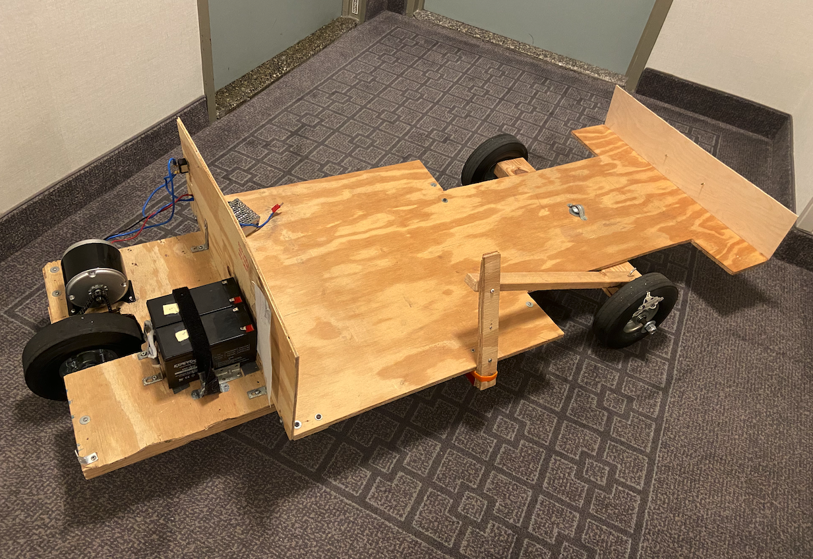

Jeff Bridges
Article Written June 8, 2023 2:05pm ET
About the Go Kart:
A couple months ago I decided to build a go kart, on an extreme budget. I completed the task with better than expected results, not only did I keep the low cost of $200, but I also managed to make a reliable, surprisingly fast (for 24V) go kart. Click here for plans to build the $200 go kart.
Specifications:
This go kart has lead acid batteries (cheaper, safer than Lithium), and they are actually very good at producing the power needed. The 24V motor allows the go kart to move at 15+ miles an hour, and the one rear wheel means you never have to worry about differentials. Steering systems can cost more than this go kart, so I opted for leg drive - though you can optionally use the system show in the photo below, a lever.

The Building Process, How Long?:
Typically it takes weeks, if not months to complete a project like this. But with no welding/heavy machinery required, it takes just 5 hours of work to assemble this. Though when factoring in shipping time, you can probably complete this one week from now. When you look at our construction manual, you will see that it only takes 8 steps from start to finish.
If I had an extra $50 budget, I would...
$200 is the lowest I've seen it takes to make a go kart. With that said, if you are willing to spend a bit more, there is a lot you can do with that. Firstly, I would get pedals. This costs less than $20, but with it you can floor this with your foot instead of using the dial that I suggest. Secondly, I would buy longer duration batteries. These 7ah batteries do last very long, but for an extra $30 you could go 7.5miles instead of 5. Increase the range however you want with that information.
Plans Here.
If you have any questions about our go kart designs or need assistance, feel free to reach out to us. You can contact us by email at darringer.capital.investments@gmail.com
You can also visit our FAQ section.
Darringer VVIS | 2023